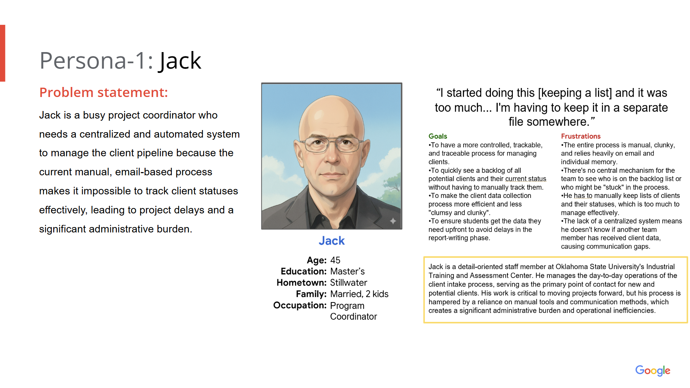
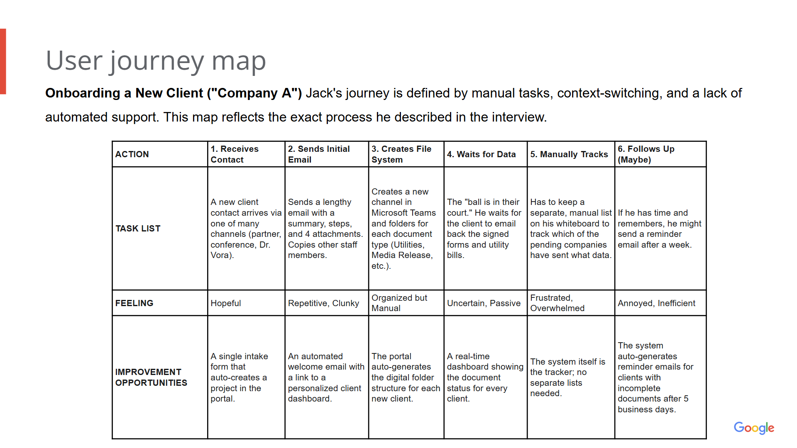
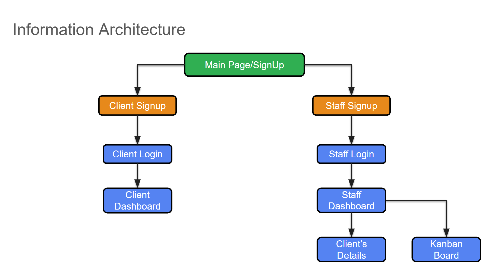
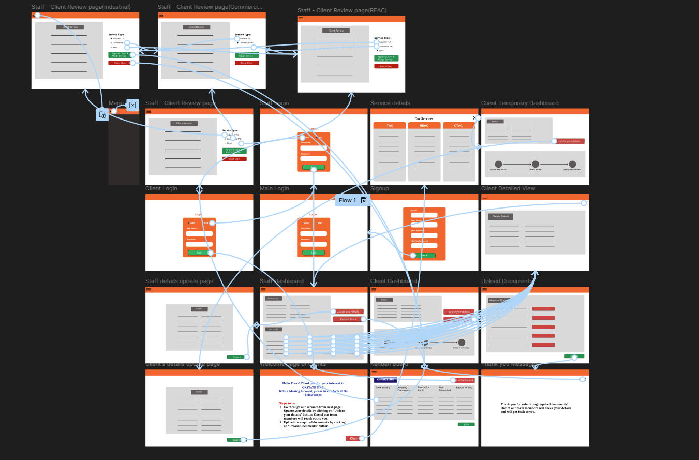
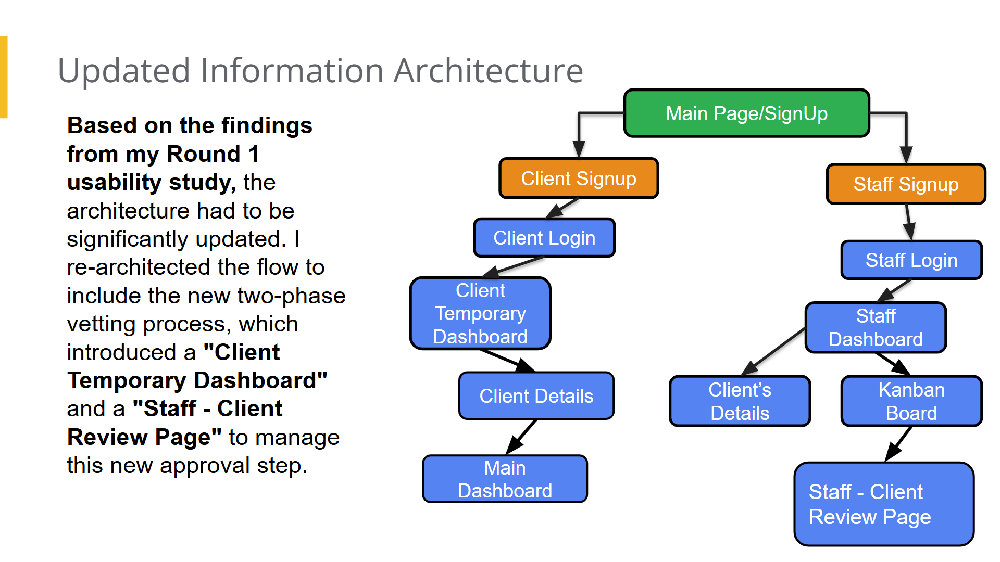
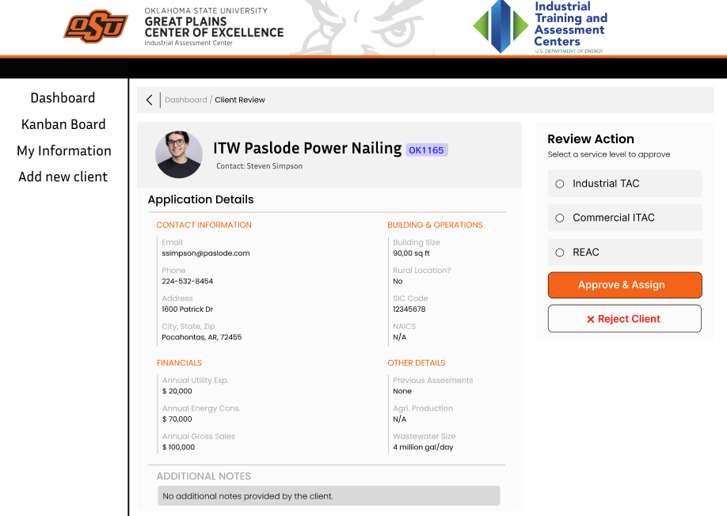
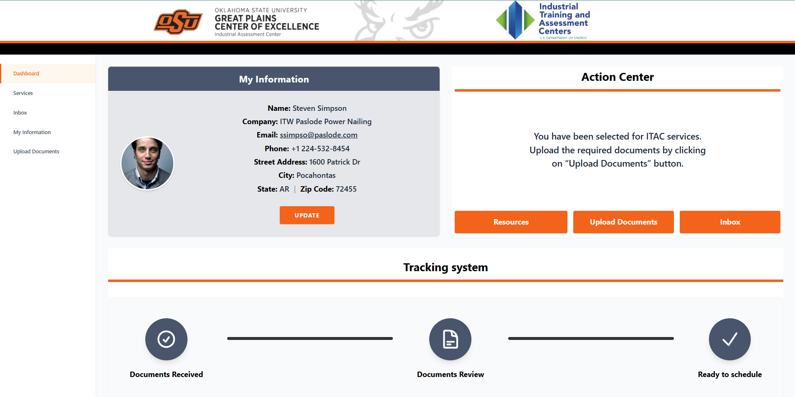

The ITAC Operations & Client Portal
Overview
The goal is to replace a fragmented, email-reliant workflow with a controlled, trackable, and traceable system through automation. This unified web portal for OSU's ITAC will manage the entire client assessment lifecycle, eliminate process bottlenecks, and provide a single source of truth for all project stakeholders.
.png)
The Problem: Understanding the User
The primary research was a detailed, semi-structured interview with a key ITAC staff member who manages the client pipeline. The interview revealed that the current process is almost entirely manual, leading to significant inefficiencies and a lack of visibility.
This uncovered four major pain points:
- No Centralized Visibility: Staff must keep manual lists, creating confusion.
- "Clumsy" Onboarding: A multi-step email process with 3-4 attachments is inefficient.
- Lack of Tracking: No systematic way of tracking which clients have submitted documents.
- Data Delays: Audits are started before all utility data is collected, stretching 5-day tasks into 15 days.
Persona: "Jack" the Program Coordinator
"I started doing this [keeping a list] and it was too much... I'm having to keep it in a separate file somewhere."
User Journey Map
 Starting the Design
Paper Wireframes
I started with paper and pencil to quickly explore layouts and information hierarchies.
Digital Wireframes & Low-Fidelity Prototype
My digital wireframes translated these solutions into a clear, functional blueprint, focusing on a Staff Dashboard (Kanban) and a Client Dashboard.
Usability Study: The "Pivot"
I conducted a design review with the ITAC director. This uncovered a critical gap: The original design didn't account for different service types (Industrial vs. Commercial), which is the first decision staff makes.
The Solution: I re-architected the flow to include a new two-phase vetting process ("Client Review Page") before a project is officially created.
Phase 2: Iteration & Development
1. Feedback Loop: The Geographic Pivot
The Insight: During the final mockup reviews, staff mentioned a hidden logistical need: "We try to plan two audits on the same day if clients are nearby to save travel costs."
The Design Change: I realized the "My Information" section on the Staff Dashboard was low-value screen real estate. I replaced it with a dynamic Client Map. Now, staff can instantly see clusters of clients and plan travel routes efficiently.
2. From Design to Code (React)
I didn't just design it; I built it. Using React for the front end, I developed a responsive, interactive portal. Below is the comparison between my Figma Design and the deployed React Application.
Slide to compare the Figma Mockup (Left) vs. the Live React App (Right)
3. Refined UI & Features
I also refined the UI to be cleaner and fully responsive. On the Kanban board, I added "Scheduled Dates" to the cards so staff can check status without clicking.
Client Review Interface (Design)
Client Profile (Live Build)
Takeaways & Impact
Impact: The new design, now currently in development, is projected to automate the client onboarding process, saving staff an estimated 5-8 hours per week in manual data entry.
What I learned: This project taught me the value of "Engineering Empathy." By building the front end myself, I was able to spot usability issues (like button sizing on mobile) that I missed in Figma. The ability to pivot quickly—like swapping the "Info" section for a Map—based on staff feedback turned a "good" dashboard into a critical tool for their daily logistics.